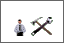

9. その他¶
その他では WebMagic の各機能をクリックすると表示される、表示形式の初期値を設定します。
9.1. その他の各種表示形式を設定する¶
メニューの
 をクリックします。
をクリックします。 をクリックします。
各項目を選択し、 適用 をクリックします。

Note
各設定内容
共通設定 : メール・掲示板等で一覧表示される件数を設定します。自動ログオフ設定 : にログイン後、画面はそのままで指定時間操作がなかった時に、指定時間を経過するとログオフします。会議室設定 : 会議室設定」を開いた際に表示される初期設定画面を設定します。ToDo設定 : [ToDo] を開いた際に表示される初期画面を設定します。テロップ設定 : 掲示板等の最新情報の設定を行います。伝言を設定すると、本人宛の伝言テロップが本人の画面上だけに流れます。Note
初期の設定に戻すには、 規定値に戻す をクリックします。